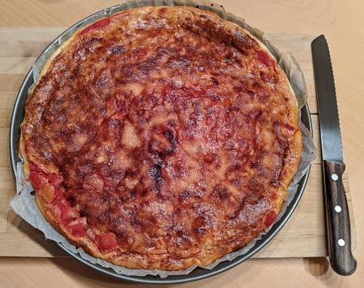

| Zutaten für 4 Personen: | |
| 300 g | Blätterteig |
| 2 EL | Paniermehl |
| 750 g | Tomaten |
| 150 g | Speckwürfel |
| 150 g | Sbrinz, gerieben |
| 3 | Eier |
| 2.5 dl | (Sauer)-Rahm |
| Salz, Pfeffer | |
| Paprika | |
| Muskat | |
Ofen vorheizen auf 180°C.
Speckwürfeli anbraten.
Springform mit kaltem Wasser ausspülen.
Blätterteig auswallen und Springform damit auskleiden. Den Teigboden regelmässig mit einer Gabel einstechen und mit Paniermehl bestreuen.
Tomaten in Scheiben schneiden und mit leicht angebratenen Speckwürfelchen lagenweise einfüllen. Geriebenen Sbrinz Käse darüber streuen.
Eier mit Rahm verquirlen, mit Salz, Pfeffer, Paprika und etwas Muskat würzen und den Guss über die Tomaten verteilen.
Die Wähe in den vorgeheizten Backofen schieben und bei mittlerer Hitze (180°) ca. 40 Minuten backen.
Vor dem Servieren mit fein gehackter Petersilie über streuen.
Herbert Eigenmann, Code: TMW
Schmeckt super! RE, 23.10.2004
Am 4 Juni 2020 nicht so toll gelungen. Sandra ist bei den Scheckwürfeli heikel und meinte ich habe die Schwarte nicht weggeschnitten. Dann habe ich das mit Pelatti aus der Dose gemacht da Coronabedingt die Tomaten ausverkauft waren. Genug Paniermehl ist nötig weil der Blätterteig sonst feucht wird.